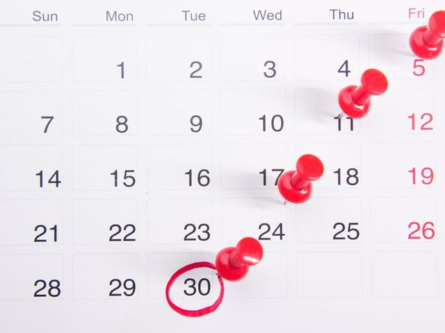
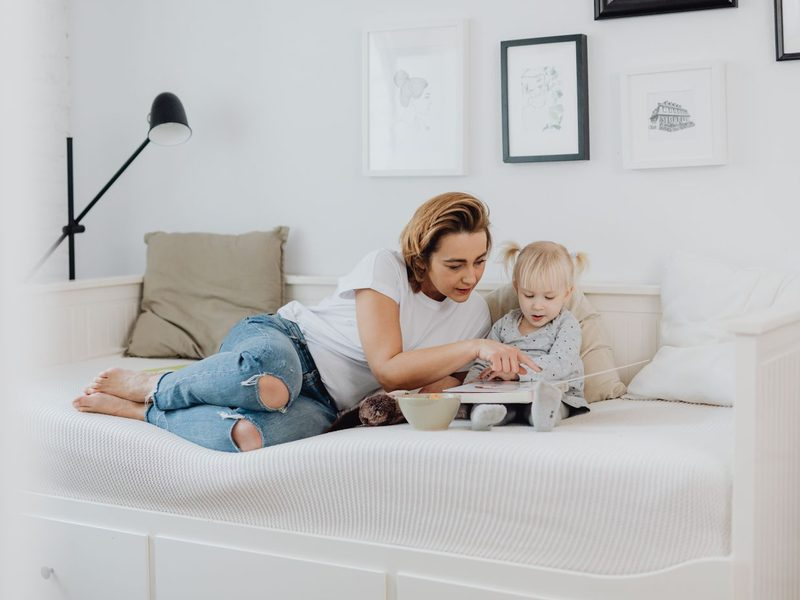

UNIT 31 · VOCABULARY
M 開頭（三）
M-III
37 個單字聽・唸・用
本單元單字一覽
WORD UP「M-III」的 37 個字（missing 到 must）。紅色＝要複習，藍色標籤＝WORD UP 標熟記、還要在這裡考對。
missingmistakemixmodelmodernmomentMondaymoneymonkeymonstermonthmonthlymoonmopmoremorningmosquitomostmotherMother's DaymotionmotorcyclemountainmousemouthmovemovementmovieMr.Mrs.MRTMs.muchmudmuseummusicmust
每個字都有 🔊，先聽發音、跟著唸，再看例句。
單字 1–4
🔍
missing
失蹤的；遺失的adj.
My cat has been missing for two days.
我的貓失蹤兩天了。
我的貓失蹤兩天了。
❌
mistake
錯誤n.
Everyone makes mistakes.
每個人都會犯錯。
每個人都會犯錯。

mix
混合v.
Mix the flour with milk.
把麵粉和牛奶混在一起。
把麵粉和牛奶混在一起。

model
模型；模特兒；榜樣n.
My brother likes building model cars.
我哥哥喜歡組裝模型車。
我哥哥喜歡組裝模型車。
單字 5–8

modern
現代的adj.
Taipei is a modern city.
台北是現代化的城市。
台北是現代化的城市。
⏳
moment
片刻；時刻n.
Wait a moment, please.
請稍等一下。
請稍等一下。
📅
Monday
星期一n.
I have English class on Monday.
我星期一有英文課。
我星期一有英文課。
money
錢n.
I saved a lot of money.
我存了很多錢。
我存了很多錢。
單字 9–12

monkey
猴子n.
The monkey is eating a banana.
猴子在吃香蕉。
猴子在吃香蕉。

monster
怪物n.
The little boy is afraid of monsters.
那個小男孩怕怪物。
那個小男孩怕怪物。

month
月n.
There are twelve months in a year.
一年有十二個月。
一年有十二個月。
📆
monthly
每月的adj./adv.
We have a monthly test.
我們每個月有月考。
我們每個月有月考。
單字 13–16

moon
月亮n.
The moon is bright tonight.
今晚月亮很亮。
今晚月亮很亮。

mop
拖把；拖地n./v.
Please mop the floor.
請拖地。
請拖地。
➕
more
更多adj./adv.
Can I have more rice?
我可以再多要一點飯嗎？
我可以再多要一點飯嗎？
morning
早上n.
Good morning!
早安！
早安！
單字 17–20

mosquito
蚊子n.
A mosquito bit me.
我被蚊子咬了。
我被蚊子咬了。
🔝
most
最多；大部分adj./adv.
Most of my friends like sports.
我大部分的朋友都喜歡運動。
我大部分的朋友都喜歡運動。

mother
母親n.
My mother is a nurse.
我媽媽是護理師。
我媽媽是護理師。

Mother's Day
母親節n.
I made a card for Mother's Day.
我為母親節做了一張卡片。
我為母親節做了一張卡片。
單字 21–24

motion
動作；移動n.
Watch the video in slow motion.
用慢動作看這段影片。
用慢動作看這段影片。

motorcycle
機車；摩托車n.
There are many motorcycles in Taiwan.
台灣有很多機車。
台灣有很多機車。
mountain
山n.
Yushan is the highest mountain in Taiwan.
玉山是台灣最高的山。
玉山是台灣最高的山。

mouse
老鼠；滑鼠n.
The cat is chasing a mouse.
貓在追老鼠。
貓在追老鼠。
單字 25–28
mouth
嘴巴n.
Open your mouth and say "Ah."
張開嘴巴說「啊」。
張開嘴巴說「啊」。

move
移動；搬家v.
We moved to Taichung last year.
我們去年搬到台中。
我們去年搬到台中。

movement
動作；運動n.
The dancer's movements are beautiful.
舞者的動作很優美。
舞者的動作很優美。
movie
電影n.
Let's go to the movies tonight.
我們今晚去看電影吧。
我們今晚去看電影吧。
單字 29–32
👨💼
Mr.
先生（稱呼）n.
Mr. Wang is our principal.
王先生是我們的校長。
王先生是我們的校長。
👩🦰
Mrs.
太太（稱呼）n.
Mrs. Chen lives next door.
陳太太住在隔壁。
陳太太住在隔壁。

MRT
捷運n.
I take the MRT to school.
我搭捷運上學。
我搭捷運上學。
👩🏫
Ms.
女士（稱呼）n.
Ms. Lee is our new teacher.
李老師是我們的新老師。
李老師是我們的新老師。
單字 33–36

much
許多；很adj./adv.
How much is this T-shirt?
這件 T 恤多少錢？
這件 T 恤多少錢？

mud
泥巴n.
The kids are playing in the mud.
孩子們在玩泥巴。
孩子們在玩泥巴。

museum
博物館n.
We visited the National Palace Museum.
我們參觀了故宮博物院。
我們參觀了故宮博物院。

music
音樂n.
I listen to music every day.
我每天聽音樂。
我每天聽音樂。
單字 37–37
❗
must
必須；一定aux.
You must wear a helmet.
你必須戴安全帽。
你必須戴安全帽。
重點整理
| 說法 | 中文 | 例子 |
|---|---|---|
| much / many | 接不可數 ／ 接可數 | much money ／ many coins |
| How much / How many | 多少（錢、不可數）／ 多少個 | How much is it? |
| make a mistake | 犯錯 | make a big mistake |
| most of + 名詞 | 大部分的… | most of the students |
| move to | 搬到… | move to Tainan |
| must / must not | 必須 ／ 禁止 | You must not run here. |
| mouse → mice | 老鼠的複數 | three mice |
Mr. 先生、Mrs. 太太、Ms. 女士、Miss 小姐。
快問快答：中文 → 英文
1失蹤的；遺失的missing
2混合mix
3現代的modern
4星期一Monday
5猴子monkey
6月month
7月亮moon
8更多more
快問快答：英文 → 中文
1mosquito蚊子
2mother母親
3motion動作；移動
4mountain山
5mouth嘴巴
6movement動作；運動
7Mr.先生（稱呼）
8MRT捷運
學完了！接下來
複習方法
review
- 回到「📗 單字卡」，按「遮中文」自己考自己
- 再按「遮英文」，看中文說出英文
- 每個例句跟著 🔊 唸一次
準備好了
- 按右上角「📝 前往測驗」
- 測驗錯的題目要訂正到全對
- 訂正完成補送 1 點